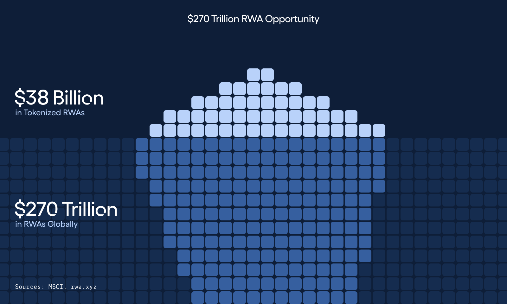
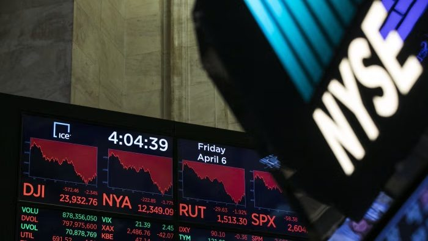
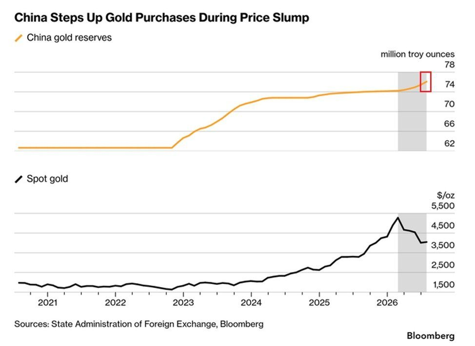
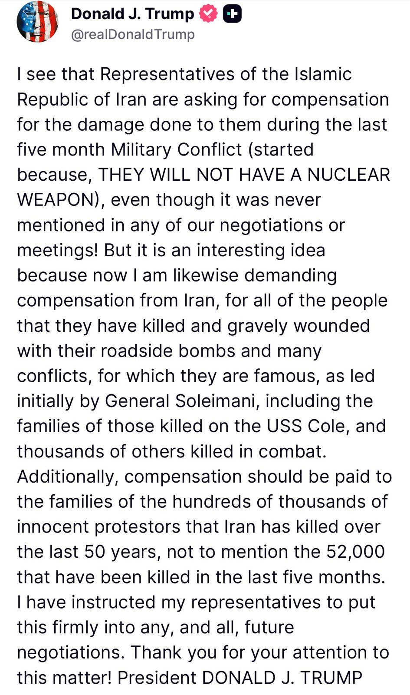
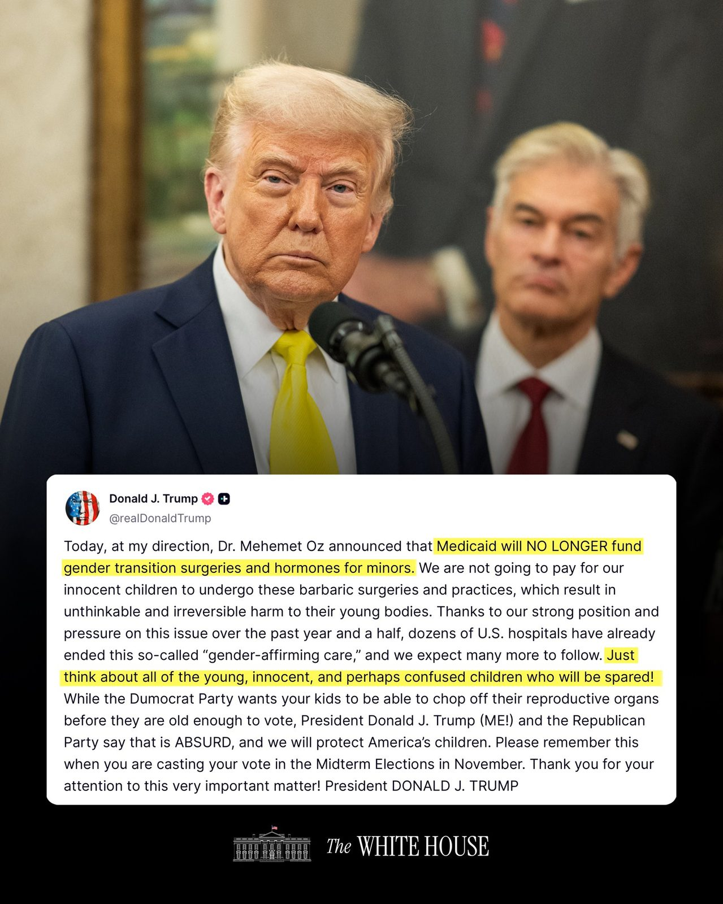
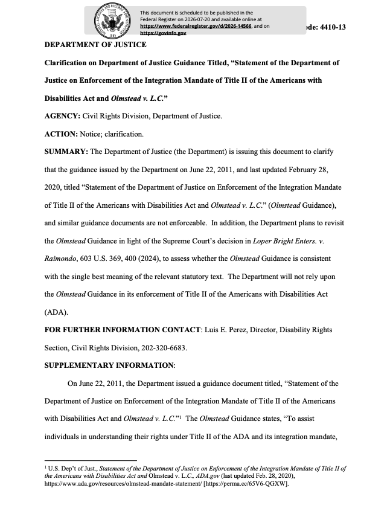
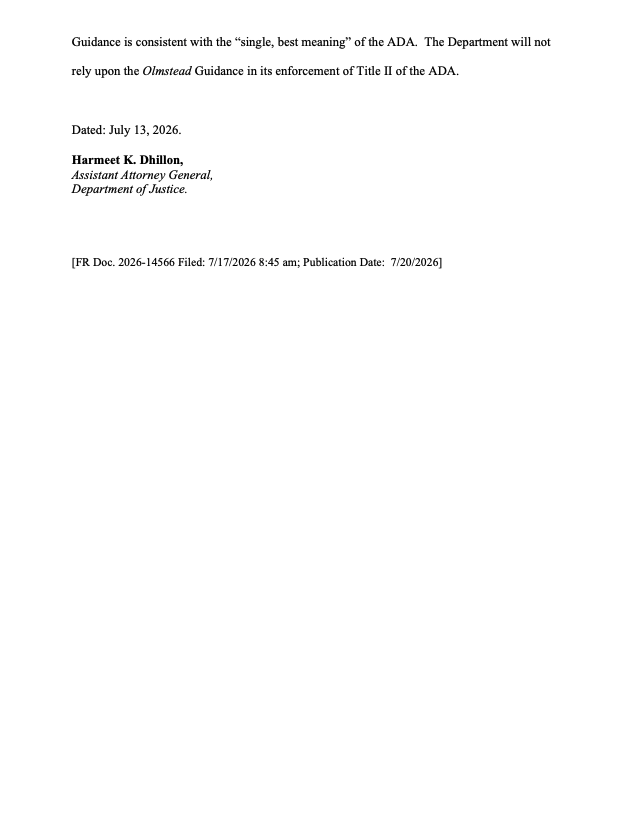
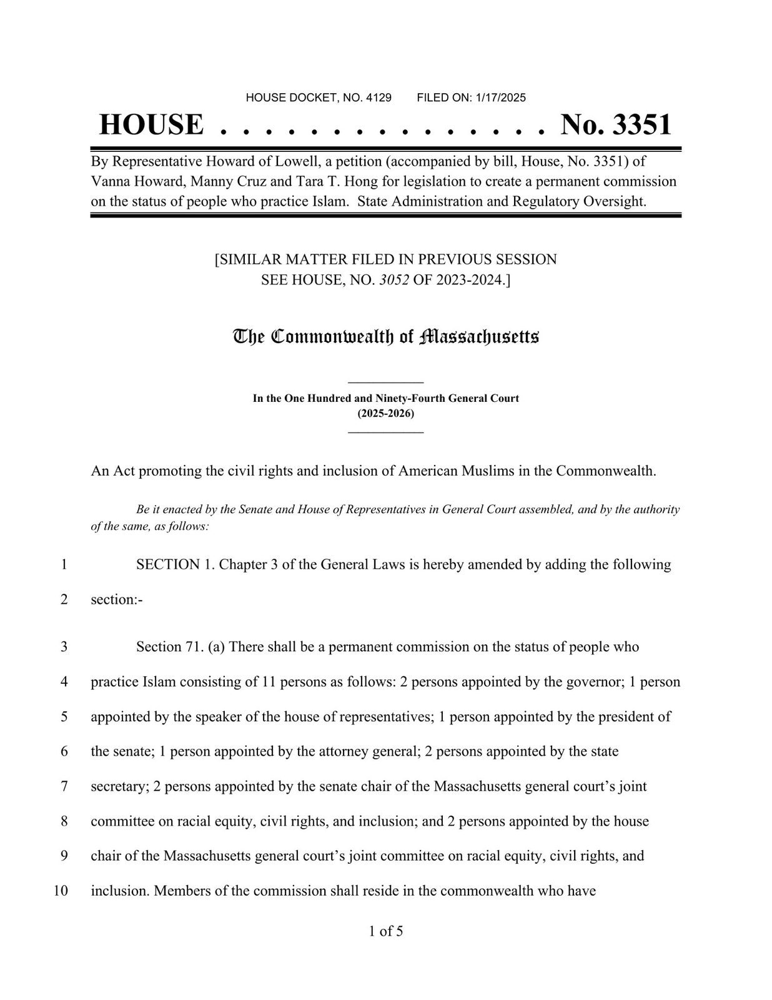
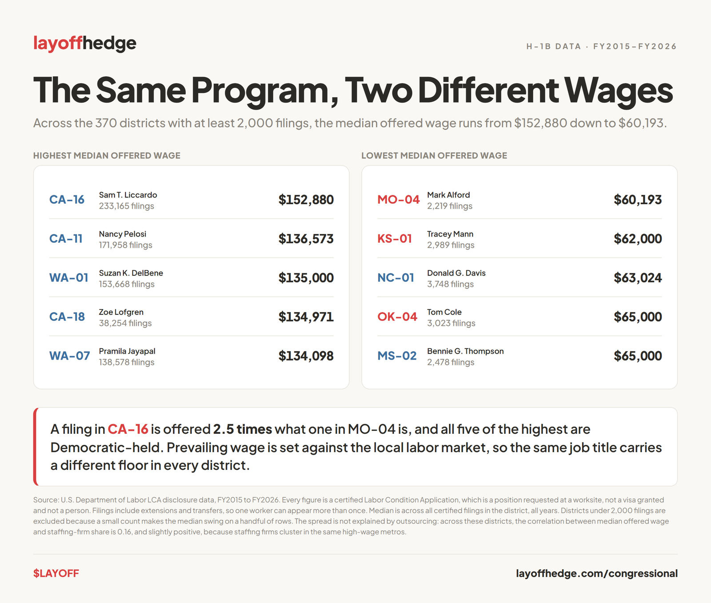

In his own announcement, Nvidia chief Jensen Huang said the company had formed partnerships with Apollo, BlackRock, Blackstone, Brookfield, Goldman Sachs and KKR to establish independent financing platforms designed to mobilize over $500 billion of third-party capital to support the buildout of AI infrastructure over time. CNBC, relayed by @KobeissiLetter, reported the effort could help Nvidia's biggest customers secure the financing needed to buy GPUs, build data centers and lock in long-term electricity capacity, and framed the AI buildout as prompting a historic wave of debt issuance. The same two days carried moves at a matching scale: Polymarket reported Anthropic signed a $9.1 billion, 20-year deal with Bitcoin miner Riot Platforms to secure AI compute; Elon Musk said SpaceX is targeting 10GW of AI compute by the end of 2027, which he said could generate up to $500 billion in annual revenue; and Morgan Stanley launched a U.S. Innovation Infrastructure Initiative it said would facilitate approximately $1.5 trillion to support America's next era of growth.
BlackRock's Larry Fink calls tokenization "the next generation for markets," and a new Forbes piece points to his words, and to Ondo's growth, as evidence that tokenized markets have arrived — "a Wall Street business, not merely a crypto slogan," in the article's phrasing.
Ondo assembles quotes from BlackRock's Fink, JPMorgan's Dimon, BNY's Vince, Franklin Templeton's Johnson and Goldman's Solomon, each endorsing tokenization of finance.

NYSE President Lynn Martin said the exchange joined DTC's July tokenization pilot and is building an on-chain settlement platform for tokenized securities.

Per FT, the UK's FCA is preparing a regulatory framework for tokenized gold to protect London's bullion dominance amid competition from China.
The SEC will hold an open meeting Friday to consider proposing a tailored offering regime for certain investment contracts involving crypto assets.
The CFTC set its inaugural Innovation Advisory Committee meeting for August 20 in Washington; separately, it announced it exercised emergency authority "to ensure market stability."
The OCC said it is reinvigorating de novo bank chartering under Treasury Secretary Bessent and commended the FDIC for similar efforts.
China's central bank added 20 tonnes of gold in July — its largest monthly purchase since October 2023 — pushing reserves to a record 2,366 tonnes, per Cointelegraph.

China launched a new "Ice Silk Road" connecting China to the U.K. through the Arctic, cutting the journey roughly in half.
Royal Navy surveillance drones used by British special forces were reportedly found secretly transmitting "heartbeat" data to an IP address in China.
Per NYT, Taiwan plans to produce 100,000 drones a month by 2030 and deploy aerial and marine drones across the strait to make a Chinese amphibious assault too costly.
“We must win on AI, because the future is overwhelmingly AI and Robots.”— Elon Musk, to SpaceX employees
Elon Musk said Starlink "could eventually carry 90% of the world's internet traffic," calling it "the first high-bandwidth global internet system to ever exist." He cited almost 11,000 satellites in orbit, a plan to reach 100,000 with Starlink V3 and beyond, operations in 167 countries, 22 million mobile subscribers and 13 million high-bandwidth subscribers.
▶ Watch on XThe NASA administrator argued the future in space "cannot be perpetually funded by taxpayers alone," and that wealthy entrepreneurs and private capital are helping solve the hardest engineering problems.
▶ Watch on XNASA said it completed testing of a lithium-fed electromagnetic thruster reaching five times the power of today's electric propulsion, which paired with a nuclear source could cut travel time to Mars.
The Department of War launched a "Golden Dome for America Hub," a digital portal it said connects commercial innovators, venture capital and startups with its homeland missile-defense office.
Anthropic said an unreleased research version of Claude did not solve the Riemann hypothesis but raised the proven lower bound for zeros satisfying it from 41.6% to 67.2%.
Per the post, Anthropic told pre-IPO investors it plans to lean harder into biology and healthcare applications to counter negative public sentiment toward the industry.
Grok introduced "Grok Bot" in early beta, described as AI teammates that sign in to your tools, use them as you would, and return finished work.
▶ Watch on XA Cloudflare executive said humans will become a "rounding error" on the internet within five years as AI-agent traffic explodes.
Per ABC, in Australia's first known autonomous AI cyberattack an agent exploited a gym's API to beat scheduling limits and cancel another member's reservation to move its user up the list.
China's Long March 7A exploded during first-stage flight, per NASASpaceflight.
▶ Watch on XPresident Trump has declared the Strait of Hormuz open. On the other side, a report attributed to a senior Iranian source and to an adviser to the Parliament Speaker said Iran would keep the strait closed until 2029 unless Trump accepts all of Iran's demands — listing $300 billion in compensation, release of up to $100 billion in frozen assets, lifting all sanctions, U.S. troop withdrawal from the region, an end to the naval blockade and transit fees on every ship.
A WaPo report, relayed on X, describes a security ruse around a stated assassination threat.
In a clip, Trump said "Iran has NO MONEY," called its currency "trash," and cited the rial falling from $1.11 to 53 cents; the post says Treasury Secretary Bessent was "reveling in it."
▶ Watch on XTwo dispatches relay Trump demanding Iran pay compensation for deaths it caused, naming Lebanon, Syria, Yemen and Gaza.

"Iran has agreed to a deal privately, per POTUS," the post states, without further detail.
A report says the Trump administration negotiated the removal of nuclear material from a covert Syrian site.
Colombia killed alleged FARC dissident leader "El Ruso" in a military operation as the new president escalates his campaign against armed groups.
President Trump said that for too long America had recommended more childhood vaccines than any peer nation — "in many cases, we were requiring 72 jabs" — and that, effective immediately, his administration recognizes "Gold Standard" recommendations for only 11 core vaccinations against the most serious diseases, plus the MMR.
▶ Watch on XThe White House quoted Trump saying that, at his direction, Dr. Mehmet Oz announced Medicaid will no longer fund gender-transition surgeries and hormones for minors.

The post says DOJ's Civil Rights Division ended its 20-year practice of suing states over institutionalized mentally ill patients, citing a July 13 directive that it "will not rely upon the Olmstead Guidance" in enforcing ADA Title II.


Commerce said it is working with the U.S. Post Office to complete the Census count, arguing postal carriers already know where Americans live and will save billions.
▶ Watch on XState Department statements say more than 175,000 visas have been revoked from foreign nationals who violated terms, committed crimes, called for violence, defrauded Americans or endangered national security.
The post says a Massachusetts bill would create a "Muslim Commission" tasked with identifying and recommending qualified American Muslims for appointive positions at all levels of government.

One post states almost 4% of Germany's population are asylum or protection seekers, that 1% are Syrian, that almost 5% of all Syrians live in Germany, and that over 40% of under-fives have a migrant background — calling it "unprecedented demographic change."
The account said the "only thing that matters" is "demographic security and sovereignty for the native British people," and cast establishment-media criticism as proof of its case.
Greece is ramping up an immigration crackdown, crediting Trump with accelerating Europe's shift toward tougher border policies.
The Institute for Remigration released a map with each dot representing 100 illegal migrants who entered Europe; the poster calls it "an invasion."
▶ Watch on XA massive jellyfish swarm shut down three reactors at a French nuclear power plant.
Extreme heat is threatening Italy's "cheese banks," where hundreds of thousands of Parmigiano-Reggiano wheels are stored as loan collateral.
Senator Ron Johnson said newly released texts show Dr. Anthony Fauci was concerned in January 2021 that a second COVID dose "theoretically could be associated with miscarriage in the 1st trimester," citing messages among Fauci, Rochelle Walensky and Vivek Murthy; a parallel Polymarket dispatch relays the same "theoretically" language.
The post states the US Conference of Catholic Bishops is over 80% funded by government refugee-resettlement grants.
In a clip, Stephen Miller contrasts a native Minnesotan lineman with a Somali refugee neighbor he describes as living on fraudulently obtained benefits, framing it as the corruption a VP-led task force will "demolish."
▶ Watch on XThe post totals offered salaries on H-1B filings at the 50 largest employers per congressional district — $408.5 billion across 11.5 years — with two Silicon Valley districts accounting for 13%.

Senator Rand Paul, posting from Fort Knox, said the dollar has lost 97% of its purchasing power since 1913, so that $100 then is worth $3,300 today.
Per Fortune, nearly half of adults under 30 now live at home.